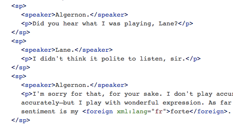
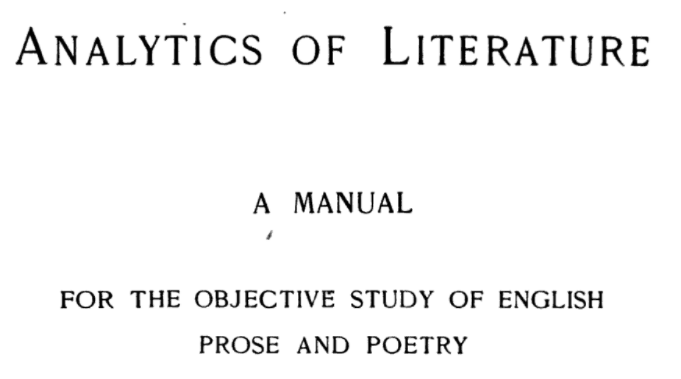
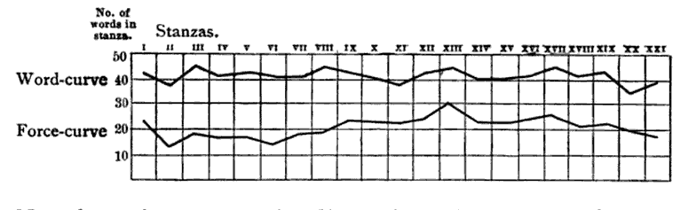
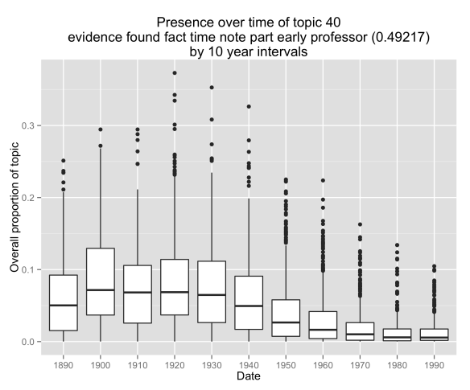
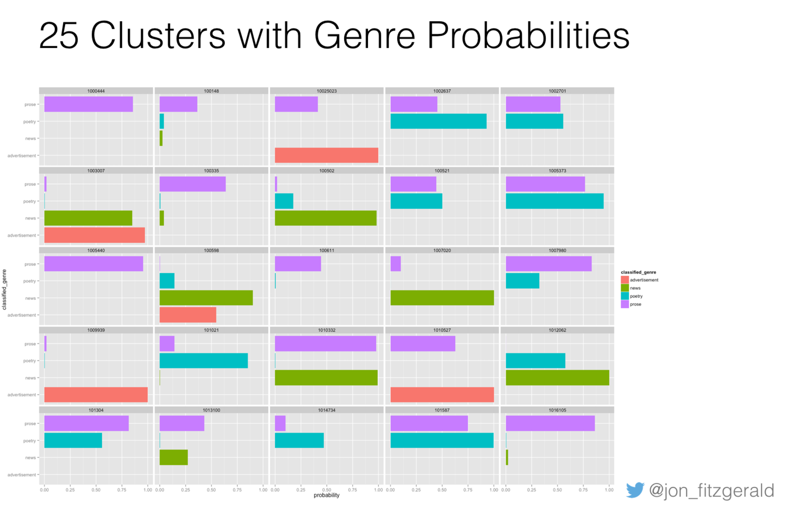

class: middle # Digital Literary Studies: ## <em>A Brief Introduction</em> Matthew J. Lavin Clinical Assistant Professor of English and Director of Digital Media Lab University of Pittsburgh May 2017 <p class="running-footer">Find @mjlavin80 on Twitter for links</p> --- class: middle <h2>Some Literary Studies Specialities in the English Department, 2017</h2> <ul> <li><big>Narrative Theory</big></li> <li><big>New Historicism</big></li> <li><big>Book History</big></li> <li><big>Poststructuralism</big></li> <li><big>Marx, Freud, Lacan</big></li> <li><big>Deconstruction</big></li> <li><big>Digital Humanities</big></li> <li><big>Post-Digital Humanities</big></li> <li><big>Periods and Genres</big></li> </ul> <p class="running-footer">Find @mjlavin80 on Twitter for links</p> --- class: middle <h2>Some Literary Studies Specialities in the English Department, 1960</h2> <ul> <li><big>Humanities Computing</big></li> <li><big>Stylometry</big></li> <li><big>Bibliography</big></li> <li><big>Structuralism</big></li> <li><big>New Criticism</big></li> </ul> <p class="running-footer">Find @mjlavin80 on Twitter for links</p> --- - <big>Master's in American Studies</big> - <big>PhD in English</big> - <big>Your English Department's Computer Guy</big> - <big>CLIR Postdoc at Center for Digital Humanities Research, UNL</big> - <big>Associate Program Manager, Mellon Humanities Grant, St. Lawrence University</big> - <big>Pitt English Department</big> - <big>When will then be now?</big> <p class="running-footer">Find @mjlavin80 on Twitter for links</p> --- class: middle ## Computer-assisted hermeneutics vs. computational text analysis - #### e.g., scholarly editing, TEI - #### Uses computers - #### Rely on hermeneutic or interpretive work - #### Often engage in argument by prototype - #### Often part of a pipeline for quantitative or scaled computation <p class="running-footer">Find @mjlavin80 on Twitter for links</p> --- class: middle  TEI Markup, <em>The Importance of Being Earnest</em> <p class="running-footer">Find @mjlavin80 on Twitter for links</p> --- class: middle   <p class="running-footer">Find @mjlavin80 on Twitter for links</p> --- class: middle  <p class="running-footer">Find @mjlavin80 on Twitter for links</p> --- class: middle <h2>A culture of openness and collective access to shared digital objects of study will allow us to: </h2> - <big> Collaborate more effectively</big> - <big> Interrogate and invalidate insufficiently rigorous scholarship</big> - <big> Verify and build upon excellent scholarship</big> - <big> Avoid duplicating the intense labor of data creation and normalization</big> - <big> Learn new methods and approaches at a pace that’s consistent with the speed at which DH moves</big> <p class="running-footer">Find @mjlavin80 on Twitter for links</p> --- class: middle ## Overview of Computational Text Analysis Methods - #### Computer-assisted hermeneutics vs. computational text analysis - #### Direct measures - #### Comparisons - #### Change over time - #### Clustering, classification - #### Choice of features - #### Choice of feature blocks <p class="running-footer">Find @mjlavin80 on Twitter for links</p> --- class: middle ## Direct measures - #### Term counts - #### Type-token ratio - #### Parts-of-speech - #### Collocations - #### Named entity recognition - #### Sentiment scores <p class="running-footer">Find @mjlavin80 on Twitter for links</p> --- class: middle ## Comparative measures - ### Any of the the previous, comparing two or more texts <p class="running-footer">Find @mjlavin80 on Twitter for links</p> --- class: middle ## [The Alice Problem](http://thedatahumanist.website) <table class="table table-bordered table-hover table-condensed"> <thead><tr><th title="Field #1" ></th> <th title="Field #2">term</th> <th title="Field #3">lucy</th> <th title="Field #4">susan</th> <th title="Field #5">dorothy</th> <th title="Field #6">wendy</th> <th title="Field #7">alice</th> </tr></thead> <tbody><tr> <td align="right">0</td> <td>saw</td> <td>-----</td> <td>-----</td> <td>XXXXX</td> <td>XXXXX</td> <td>-----</td> </tr> <tr> <td align="right">1</td> <td>picked</td> <td>-----</td> <td>-----</td> <td>XXXXX</td> <td>-----</td> <td>-----</td> </tr> <tr> <td align="right">2</td> <td>story</td> <td>-----</td> <td>-----</td> <td>-----</td> <td>XXXXX</td> <td>-----</td> </tr> <tr> <td align="right">3</td> <td>queen</td> <td>XXXXX</td> <td>XXXXX</td> <td>-----</td> <td>-----</td> <td>-----</td> </tr> <tr> <td align="right">4</td> <td>exclaimed</td> <td>-----</td> <td>-----</td> <td>XXXXX</td> <td>-----</td> <td>XXXXX</td> </tr> <tr> <td align="right">5</td> <td>went</td> <td>-----</td> <td>-----</td> <td>XXXXX</td> <td>-----</td> <td>XXXXX</td> </tr> <tr> <td align="right">6</td> <td>little</td> <td>-----</td> <td>-----</td> <td>-----</td> <td>-----</td> <td>XXXXX</td> </tr> <tr> <td align="right">7</td> <td>returned</td> <td>-----</td> <td>-----</td> <td>XXXXX</td> <td>-----</td> <td>-----</td> </tr> <tr> <td align="right">8</td> <td>asked</td> <td>XXXXX</td> <td>XXXXX</td> <td>XXXXX</td> <td>-----</td> <td>XXXXX</td> </tr> <tr> <td align="right">9</td> <td>could</td> <td>XXXXX</td> <td>-----</td> <td>XXXXX</td> <td>XXXXX</td> <td>XXXXX</td> </tr> <tr> <td align="right">10</td> <td>presently</td> <td>-----</td> <td>XXXXX</td> <td>-----</td> <td>-----</td> <td>-----</td> </tr> <tr> <td align="right">11</td> <td>together</td> <td>-----</td> <td>-----</td> <td>-----</td> <td>-----</td> <td>XXXXX</td> </tr> <tr> <td align="right">12</td> <td>heard</td> <td>-----</td> <td>-----</td> <td>-----</td> <td>-----</td> <td>XXXXX</td> </tr> <tr> <td align="right">13</td> <td>thought</td> <td>XXXXX</td> <td>-----</td> <td>XXXXX</td> <td>-----</td> <td>XXXXX</td> </tr> <tr> <td align="right">14</td> <td>answered</td> <td>-----</td> <td>-----</td> <td>XXXXX</td> <td>-----</td> <td>-----</td> </tr> <tr> <td align="right">15</td> <td>began</td> <td>-----</td> <td>-----</td> <td>-----</td> <td>-----</td> <td>XXXXX</td> </tr> </tbody></table> <p class="running-footer">Find @mjlavin80 on Twitter for links</p> --- class: middle ## Change over time - ### Germanic-Latinate ratio in literature, 1700-1920 (Underwood and Sellers) - ### Repetition in 19th Century American Fiction (Gemma et al) <p class="running-footer">Find @mjlavin80 on Twitter for links</p> --- class: middle <img style="height: 100%; width: 100%;" src="../images/diction.jpg"/> Underwood and Sellers, "The Emergence of Literary Diction" <p class="running-footer">Find @mjlavin80 on Twitter for links</p> --- class: middle ## Clustering, classification - ### Topic modeling (Blei and Lafferty) - ### Machine learning (Houston and Audenaert) - ### Topic modeling and machine learning, with book historical concerns (Cordell, Fitzgerald) <p class="running-footer">Find @mjlavin80 on Twitter for links</p> --- class: middle  Fitzgerald, "What Made the Front Page in the 19th Century?: Computationally Classifying Genre in 'Viral Texts'" <p class="running-footer">Find @mjlavin80 on Twitter for links</p> --- class: middle ## Choice of features - #### High frequency function words - #### N-grams - #### Term frequencies - #### Parts of speech - #### Sentiment scores - #### Shape of text block - #### Other bibliographical identifiers? <p class="running-footer">Find @mjlavin80 on Twitter for links</p> --- class: middle <img style="height: 90%; width: 90%;" src="../images/pos.png"/> Linguistically annotated version, <em>King Henry VII: or the popish imposter</em> <p class="running-footer">Find @mjlavin80 on Twitter for links</p> --- class: middle ## Choice of feature blocks - ### A novel - ### Novels in a span of years - ### A chapter or excerpt - ### A TEI element or group of elements (e.g. all lines spoken by Hamlet) - ### TEI or other elements of book historical interest (an installment, a preface) <p class="running-footer">Find @mjlavin80 on Twitter for links</p> --- class: middle <h2>Concluding Remarks</h2> - ### Quantification and Hermeneutics - ### Embracing Empiricism to Leave Empiricism <p class="running-footer">Find @mjlavin80 on Twitter for links</p> --- class: top ## Bibliography - Binongo, José Nilo G. "Who Wrote the 15th Book of Oz? An Application of Multivariate Analysis to Authorship Attribution." Chance 16.2 (2003): 9–17. Print. - Blei, David M., and John D. Lafferty. "A Correlated Topic Model of Science." The Annals of Applied Statistics 1.1 (2007): 17–35. Print. - Dimmit, Laura et al. “Exploring the Intersection of Personal and Public Authorial Voice in the Works of Willa Cather.” Digital Scholarship in the Humanities 30.suppl_1 (2015): i36–i42. academic.oup.com. Web. - Fitzgerald, Jonathan D. “What Made the Front Page in the 19th Century?: Computationally Classifying Genre in ‘Viral Texts.’” N.p., 2016. Print. - Gemma, Marissa, Frédéric Glorieux, and Jean-Gabriel Ganascia. "Operationalizing the Colloquial Style: Repetition in 19th-Century American Fiction." Digital Scholarship in the Humanities (2015): fqv066. dsh.oxfordjournals.org. Web. - Glass, Loren Daniel. Authors Inc: Literary Celebrity in the Modern United States, 1880-1980. New York: NYU Press, 2004. Print. --- class:top ## Bibliography - Houston, Natalie, and Neal Audenaert. "Visual Page: Towards Large Scale Analysis of Nineteenth-Century Print Culture" 2013 IEEE International Conference on Big Data. October 2013. 9-16. - Kirschenbaum, Matthew, and Sarah Werner. “Digital Scholarship and Digital Studies: The State of the Discipline.” Book History 17.1 (2014): 406–458. Project MUSE. Web. - Liddle, Dallas. "Genre: 'Distant Reading' and the Goals of Periodicals Research." Victorian Periodicals Review 48.3 (2015): 383–402. Project MUSE. Web. - McGill, Meredith L. American Literature and the Culture of Reprinting, 1834-1853. University of Pennsylvania Press, 2013. Project MUSE. Web. 22 Feb. 2017. - O’Brien, Sharon. Willa Cather: The Emerging Voice. Cambridge: Harvard University Press, 1997. Print. - Thacker, Robert. “‘It’s Through Myself That I Knew and Felt Her’: S. S. McClure’s My Autobiography and the Development of Willa Cather’s Autobiographical Realism.” American Literary Realism 33.2 (2001): 123. Print. --- class:top ## Bibliography - Underwood, Ted, and Jordan Sellers. "The Emergence of Literary Diction." Journal of Digital Humanities 1.2 (2012): 1–2. Web. - Williams, Deborah Lindsey. “Hiding in Plain Sight: Willa Cather and Ghost Writing.” Willa Cather Pioneer Memorial Newsletter and Review 43 (1999): 25–31. Print. - Zitter, E. S. “Making Herself Born: Ghost Writing and Willa Cather’s Developing Autobiography.” Biography 19.3 (1996): 283–301. Print.